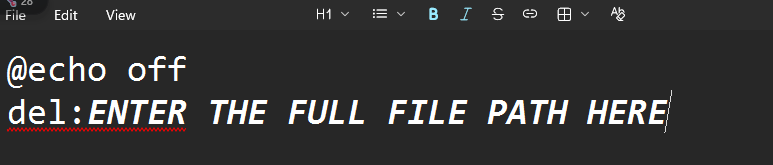

Did you know that you could delete files in windows by just double-clicking a file?
today I will tell you how to do that!
STEP 1:Make a text file in your desired location.

STEP 2:Open your file in Notepad or your desired text editor.
STEP 3:Write the command given below into your text file and edit it as directed.

STEP 4:In the del:colmun write the full path of the file you want to delete.
STEP 5:Now click on file-Save As,save it and use .bat extension instead of the default .txt extension and in the file type colmun below,switch it from text document (.txt) to all files,this ensures that the file dosen't get saved as .html.txt or it will work like a normal text file


STEP 6:Now run the file,if it was made correctly,the target file will move to recycle bin.
Your file should look like this or similar after saving it as .bat.